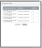

Note: Depending on your role, you may not have access to this menu.
Note: Only available to a Production Editor.
Use the File CleanUp command before using any Power Tools commands and before submitting the article.
This command enforces constraints on the underlying XML of your article.
You can download and view Schematron validation reports.

Open the downloaded report with any text editor installed on your system.
ArticleExpress keeps a new version of the article after each save. This makes it easy to go back to a prior version. You won't lose versions if you go back to a prior version. For example. suppose you are working with version 13, and rollback to version 5. ArticleExpress saves a new version and numbers it version 14. Version 14 contains the article as it existed at version 5. However, you can later go to versions 6, 7, 8, etc. ArticleExpress never overwrites or deletes a version.
processmenu.htm | Copyright © 2015 Dartmouth Journal Services All Rights Reserved.
{kind=link}
{kind=link}